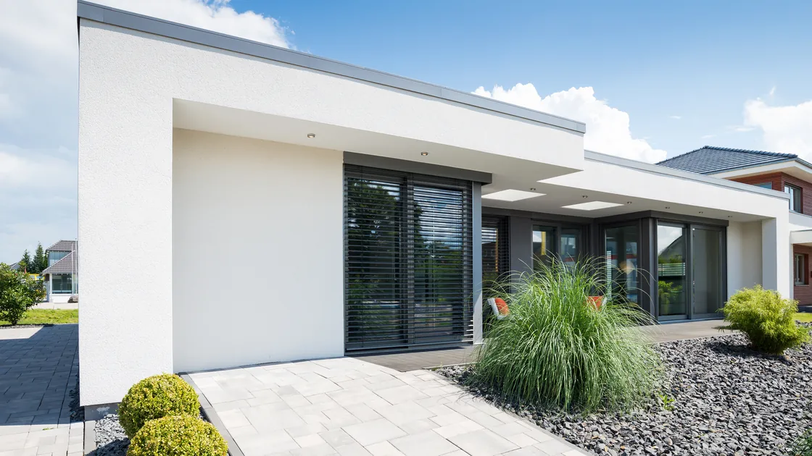

外壁塗装
色あせた外壁を、住まいに合う印象へ。外壁の状態を確認し、色や仕上がりを考えて塗り替えを検討します。傷みがある箇所は、補修の必要性も確認します。
住まいの外側を、これからも大切に。外壁や屋根の状態を確かめ、必要な手入れを考えます。

色あせた外壁を、住まいに合う印象へ。外壁の状態を確認し、色や仕上がりを考えて塗り替えを検討します。傷みがある箇所は、補修の必要性も確認します。
普段見えにくい屋根も、状態に合わせて見直しを。屋根材や周辺の傷みを確認し、部分的な補修や塗り替え、交換など、必要な工事を検討します。
ひび割れやはがれが気になる外壁を、状態に合った方法で整えます。傷みの範囲を確認し、補修が必要な場所と方法を検討します。塗り替えとの組み合わせも考えます。
ベランダや屋上の傷みを確認し、防水工事を検討します。雨漏りがある場合は、雨水が入る原因を調べ、建物の状態に合わせて対策を考えます。
外壁の色あせや汚れで、家の印象が気になる。現在の外壁の状態を確認し、周囲の雰囲気や好みに合う色、必要なお手入れを考えます。
外壁のひび割れやはがれ、屋根の傷みが気になる。傷みの場所や範囲を確認し、補修する箇所と工事の方法を検討します。
雨の日に水が入る、天井や壁に染みができた。気づいた場所や雨の日の様子をお聞きし、原因を確認して必要な対策を考えます。
気になっている傷みや、外観の希望をお聞きします。
外壁や屋根、ベランダなどの状態と工事範囲を確認します。
確認した内容をもとに、補修方法や素材、色をご提案します。
天候や暮らしへの影響も考えながら、工事の日程を調整します。
決まった内容に沿って工事を進め、仕上がりを確認します。
好みの雰囲気や、今の外観で気になることからお聞かせください。周囲との調和や仕上がりの印象を考えながら、色を一緒に検討します。
雨水が入る原因や場所によって、必要な対策は異なります。塗り替えだけで対応できるとは限らないため、建物の状態を確認して工事の方法を検討します。
工事の場所や範囲によって異なります。音やにおい、窓の開閉、家の出入りへの影響を事前に確認し、暮らしへの負担を考えながら進め方を検討します。